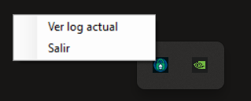
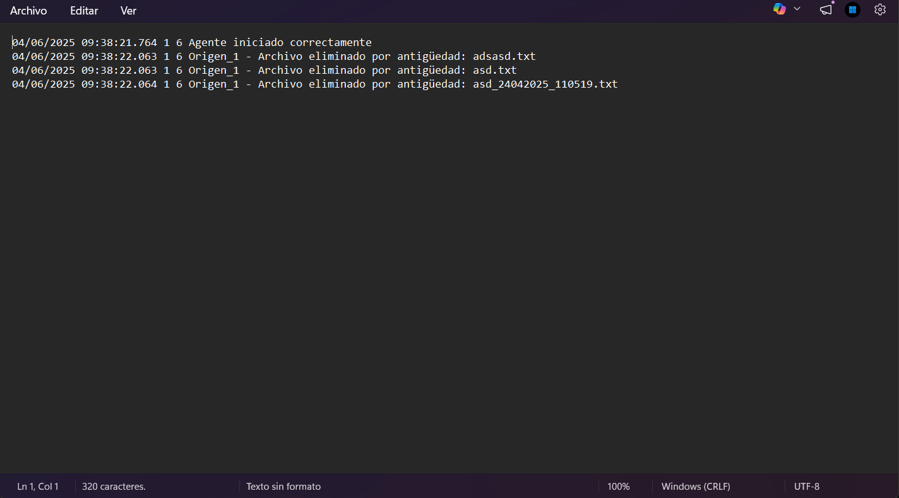

Agente SFTP
Servicio de escritorio desarrollado durante las prácticas en empresa que monitoriza hasta 10 carpetas locales de forma simultánea y sube automáticamente los archivos detectados a sus respectivos servidores SFTP, ejecutándose en segundo plano desde la bandeja del sistema de Windows.
Cada origen se configura de forma independiente en un archivo config.ini externo —
servidor, credenciales cifradas, carpeta local y frecuencia de revisión — sin necesidad de recompilar
la aplicación para adaptarla a nuevos entornos o máquinas.
Funcionalidades clave
- Monitorización multi-origen: Hasta 10 carpetas locales vigiladas en paralelo, cada una con su propio timer independiente y frecuencia configurable (mínimo 5 segundos).
- Subida SFTP con reintentos: Hasta 2 reintentos automáticos por archivo con espera de 3 segundos entre intentos. Los errores de autenticación no reintentan para evitar bloqueos de cuenta.
- Detección de archivo en uso: Antes de subir, se verifica que el archivo no esté bloqueado por otro proceso, evitando transferencias de archivos incompletos o en proceso de copia.
- Gestión de conflictos de nombre: Si ya existe un archivo con el mismo nombre en el servidor
remoto o en la carpeta
enviados/, se renombra automáticamente añadiendo un timestamp. - Carpeta de enviados: Los archivos subidos correctamente se mueven a una subcarpeta
enviados/del origen para mantener un historial local. - Limpieza automática: Timer diario que elimina archivos de
enviados/con más de 30 días de antigüedad, evitando el crecimiento indefinido del directorio. - Credenciales cifradas con AES: Las contraseñas nunca se almacenan en texto plano — se cifran con EncryptorACX y se desencriptan en memoria al arrancar.
- Log rotativo asíncrono: Sistema de logging con formato Syslog que escribe en un hilo
dedicado mediante
BlockingCollection, con rotación mensual automática aconexion_old.log. - Tooltip dinámico: El icono de bandeja muestra en tiempo real el número de orígenes activos, la hora de la última subida y los archivos transferidos durante el día.
- Menú contextual: Clic derecho sobre el icono permite abrir el log actual directamente en el Bloc de notas o cerrar el agente.
Tecnologías usadas
Lenguaje: C#
Framework: .NET 8, Windows Forms
Protocolo: SFTP mediante SSH.NET (Renci.SshNet)
Criptografía: AES (integración con EncryptorACX)
Otros: System.Timers, BlockingCollection, NotifyIcon, parser INI personalizado.
Galería de pantallas


Decisiones técnicas
BlockingCollection para escritura de logs: Las entradas de log se encolan y procesan en un hilo dedicado de larga duración, evitando que las escrituras en disco bloqueen los timers de subida cuando varios orígenes generan eventos simultáneamente.
Reintentos inteligentes: El sistema reintenta automáticamente en errores de red o servidor no disponible, pero interrumpe inmediatamente ante errores de autenticación — reintentar en ese caso sería inútil y podría bloquear la cuenta en el servidor.
Verificación de archivo disponible: Antes de cada subida se intenta abrir el archivo en modo exclusivo. Si está bloqueado por otro proceso — por ejemplo, está siendo generado o copiado — se omite en esa iteración y se reintentará en el siguiente ciclo del timer.
Parser INI propio: Se implementó un lector de archivos .ini desde cero sin
librerías externas, parseando secciones y claves línea a línea con soporte de comentarios y tolerancia a
espacios.
Frecuencia mínima con aviso: Si se configura una frecuencia menor de 5 segundos, la aplicación la eleva automáticamente al mínimo y registra un warning en el log en lugar de lanzar una excepción, priorizando la robustez frente al error de configuración.